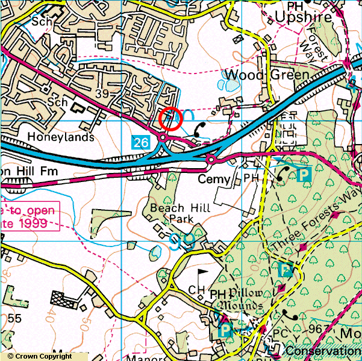
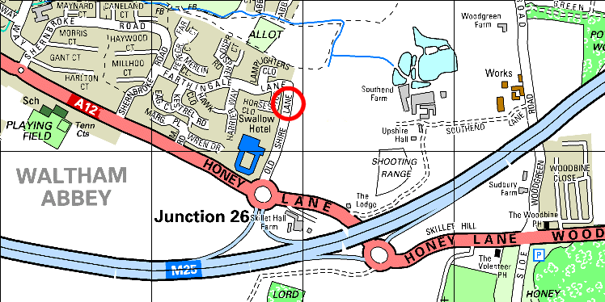

The blue road is the M25. Junction 26 is half way between the A10 and M11, pretty much directly North of London. The map below contains more detail:

Leave the M25 at Junction 26. If travelling clockwise aroung the M25 the slip road will end at a large roundabout. You want to go stright over the roundabout into Old Shire Lane. The road is quite wide and quiet. Drive to the end, turn around and park on the side opposite the Swallow Hotel indicated by the red circle.